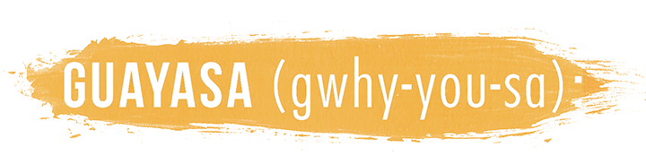

is a native Amazonian super-leaf that gives you clean energy by balancing as much energny as a cup of coffee with double the polyphenol antioxidants of leading green tea products. Indigenous people in the Ecuadorian Amazon have brewed guavas like tea for thousands of years as an essential part of what makes them "Runa" fully alive. Unlike traditional teas, it contains no tannins, so it tastes surprisingly smooth and naturally sweet.